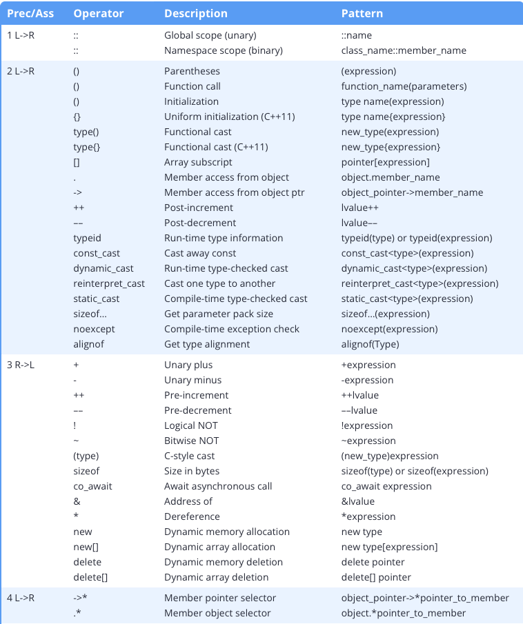
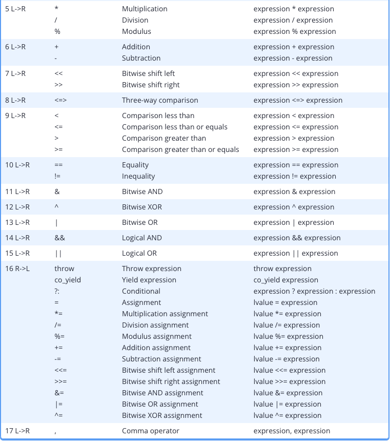

章节简介#
本章的内容建立在1.9 - 字面量和操作符的基础上。首先让我们来复习一下学过的内容：
数学中的运算指的是一个计算操作，它涉及到0个或多个输入值（称为操作数），并能够产生一个新的值（称为输出值）。这个特定的计算操作，通过某种结构（通常是一个或一对符号）来指定，这种结构称之为运算符(operator)。
例如，我们都知道 2 + 3 = 5。在这个表达式中，2和3称之为运算符，而符号 + 则称为运算符，该运算符告诉我们此时将对两个操作数执行一个加法操作，并产生一个新的值 5。
在本章节中，我们会讨论有关运算符的话题，同时介绍很多 C++ 支持的运算符。
运算符的优先级#
考虑一下这个稍微有点复杂的表达式 4 + 2 * 3。一个含有多种运算符的表达式称为复合表达式，为了对一个复合表达式求值，我们必须知道每个运算符的含义，以及运算符的执行顺序。复杂表达式求值时运算符的执行顺序有运算符的优先级决定。基于对普通运算符优先级的理解（乘法优先级高于加法），我们可以知道上述表达式应该按照 4 + (2 * 3) 求值并得到结果 10。
在 C++ 中，当编译器遇到表达式时，它同样需要分析表达式并确定如何求值。为了帮助编译器判断，所有的运算符都被指定了优先级。运算符的优先级越高，越先求值。
你可以从下面的表中看到，乘法和除法（优先级 5）的优先级高于加法和减法（优先级 6）因此 4 + 2 * 3 会被看做 4 + (2 * 3) 因为乘法的优先级更高。
运算符的结合律#
如果两个运算符的优先级恰好相等会怎样？例如，在 3 * 4 / 2 中，乘法和除法的优先级就是一样的，这种情况下编译器仅靠优先级是不能判断如何求值的。
如果两个运算符的优先级相同，则编译器会参考运算符的结合律以判断该运算符的求值顺序是从左向右还是从右向左。优先级 5 的运算符，结合律为从左向右，因此表达式被看做 (3 * 4) / 2 = 6。
运算符表#
下表的主要作用是作为参考手册来使用（如果你将来遇到有关优先级和结合律相关的问题时可以过来查询）。
注意：
- 优先级1是最高的优先级，17 为最低。运算符的优先级越高，越先求值；
- L→R 表示从左向右；
- R→L 表示从右向左；


你肯定已经认识上表中的某些操作符了，例如 +, -, *, /, () 和 sizeof。不过，如果你没有其他编程语言的基础的话，其中大多是操作符你应该还不能理解其含义。这是正常的，我们本章节中介绍它们中的大多是，剩下的一些则会在遇到时再介绍。
!!! question “Q: 为什么没有指数运算符?”
C++ 并不支持指数运算符（`operator^ 在 C++ 中有其他的含义`）。我们会在[[5-3-Modulus-and-Exponentiation|5.3 - 求模和指数运算]]中介绍指数运算。
加括号#
在数学运算中，我们都知道加括号可以改变运算符执行的顺序。例如，我们知道 4 + 2 * 3 会按照 4 + (2 * 3) 求值。但是如果我希望按照 (4 + 2) * 3 求值呢？你就可以向这个表达式一样，使用括号明确表示你希望的求值方式。C++ 中你也可以这样做，因为括号具有最高的优先级，所以括号总是先于它内部的任何符号进行求值。
再考虑下面的表达式 x && y || z。它应该按照 (x && y) || z 求值还是按照 x && (y || z) 求值呢？你可以查看上表，发现 && 的优先级高于 ||。但是运算符毕竟太多了，你也不可能都记住。
为了减少错误，同时提高代码的可读性（减少查表），对于复杂的表达式使用括号明确你的目的是最好的。
上面所说的最佳实践有一个例外：对于赋值运算符来说，如果表达式中只有一个赋值运算符它右边的整个表达式没必要放在括号里。
例如：
x = (y + z + w); // 不需要
x = y + z + w; // 这样就可以
x = ((y || z) && w); // 不需要
x = (y || z) && w; // 这样就可以
x = (y *= z); // 有多个赋值运算符的情况下，加括号仍然很有用赋值运算符的优先级是倒数第二高的（逗号运算符的优先级最低，而且也不常用）。因此，只要表达式中只有一个赋值运算符（而且没有逗号运算符），那么可以确定赋值号右边的表达式会在赋值前完全求值。
表达式求值顺序和函数参数处理顺序大多是未指明的#
考虑下面的表达式：
a + b * c基于优先级和结合律，我们指定上面的表达式会按照下面的方式求值：
a + (b * c)如果 a=1，b=2 ，c=3，则整个表达式的结果为 7。
但是，优先级和结合律只表明运算符之间的求值顺序，但并没有说明表达式其他部分的求值顺序。例如，上面例子中 a,b,c的求值顺序是什么呢？
令人吃惊的是，大多数情况下，复杂表达式中各部分的求值顺序是没有明确规定的（包括函数调用和参数求值）。因此，编译器可以自由选择它认为最优的求值顺序。
对于大多数表达式，这都不是什么大事。以上面的表达式为例，几个变量哪个先求值都是可以的，结果也总是等于 7。
但是，确实有些表达式是有可能受影响的。考虑下面这个程序，它其中包含的错误是很多新手程序员都会犯的。
#include <iostream>
int getValue()
{
std::cout << "Enter an integer: ";
int x{};
std::cin >> x;
return x;
}
int main()
{
std::cout << getValue() + (getValue() * getValue()); // a + (b * c)
return 0;
}运行该程序并依次输入 1、2 和 3的话，你可能会认为输出结果应该是 7。但是，这是建立在调用getValue()会从左向右求值的假设上的。实际上，编译器可能会选择不同的求值顺序。例如，如果编译器采用从右向左的顺序求值，则相同的输入得到的结果就是 5 （3+(2*1)）。
上面的程序可以稍加修改变成没有歧义的形式，即将函数调用作为单独的语句：
#include <iostream>
int getValue()
{
std::cout << "Enter an integer: ";
int x{};
std::cin >> x;
return x;
}
int main()
{
int a{ getValue() }; // will execute first
int b{ getValue() }; // will execute second
int c{ getValue() }; // will execute third
std::cout << a + (b * c); // order of eval doesn't matter now
return 0;
}